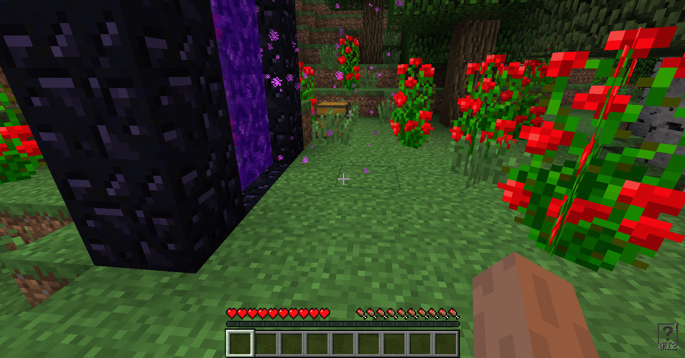

Система временных эффектовlink
Автор данной статьи — AustereTony.
Исходники можно посмотреть в GitHub репозитории.
Здравствуйте. В данном туториале я опишу процесс создания собственной системы временных эффектов (баффов), которая будет работать со всеми существами(наследниками EntityLivingBase). Работают они так же, как и ванильные эффекты зелий, однако имеют ряд улучшений и оптимизаций. В первую очередь статья будет полезна тем, кому требуется возможность создавать множество эффектов с полным контролем над ними.
Основаlink
Начнём! Первым делом создадим объект-основу для регистрации наших временных эффектов и описания общих свойств. Расположим тут всё необходимое для применения эффектов. Cоздаём поля для описания общих свойств: идентификатор, название, индекс координат иконки и т.п., создаём сеттеры и геттеры для них. Объявляем массив объектов, в который будем добавлять эффекты. Наследники класса должны переопределять методы onActive() и isReady(), определяющие поведение эффекта, эти методы вызываются каждый тик. Здесь же создаём методы, которые будут единожды вызываться при добавлении и удалении временного эффекта, их будем использовать для активности, которую требуется вызывать один раз.
Этого достаточно для работы с любой сущностью в рамках ванильной игры. Этот объект будет тесно связан с классом, реализующим EEP и общим для всех EntityLivingBase. Такой класс должен содержать только информацию об эффектах. Для остальных EEP создавайте отдельные классы. В Buff для работыс эффектами в методы передаётся EntityLivingBase и если, например, вы создали ещё EEP для игрока и что то вроде "магии", то для создания эффектов, работающих с вашей "магией" просто получите ваши EEP прямо в методах обработки.
// ru/buffs/main/Buff.java
public class Buff {
public final int id;
private String name;
//Число, определяющее координаты иконки баффа в файле с текстурами.
private int iconIndex;
//keepOnDeath определяет, сохранять ли бафф при смерти.
//isPersistent определяет бессрочность эффекта, эффект не исчезнет ни при смерти, ни со временем.
private boolean keepOnDeath, isPersistent;
//Создаём массив объектов.
public static List<Buff> buffs = new ArrayList<Buff>();
public Buff() {
//Присваеваем идентификатор.
this.id = buffs.size();
//Добавляем созданный объект в массив ArrayList.
this.buffs.add(this);
}
public static Buff of(int buffId) {
return buffs.get(buffId);
}
//Метод, который применяет эффект баффа если isReady() возвращает true.
protected void onActive(EntityLivingBase entityLivingBase, World world, ActiveBuff buff) {
int
tier = buff.getTier(),
duration = buff.getDuration();
}
//Служебный метод, определяющий возможность применить эффект в onActive().
protected boolean isReady(ActiveBuff buff) {
int
tier = buff.getTier(),
duration = buff.getDuration();
return false;
}
//Добавляем эффект баффа на сервере.
public void applyBuffEffect(EntityLivingBase entityLivingBase, World world, ActiveBuff buff) {
if (!world.isRemote) {
int
id = buff.getId(),
tier = buff.getTier();
}
}
//Удаляем эффект баффа на сервере.
public void removeBuffEffect(EntityLivingBase entityLivingBase, World world, ActiveBuff buff) {
if (!world.isRemote) {
int
id = buff.getId(),
tier = buff.getTier();
}
}
//Сеттеры для описания свойств и геттеры.
protected Buff setName(String name) {
this.name = name;
return this;
}
public String getName() {
return this.name;
}
protected Buff setIconIndex(int x, int y) {
this.iconIndex = x + y * 8;
return this;
}
public int getIconIndex() {
return this.iconIndex;
}
protected Buff keepOnDeath() {
this.keepOnDeath = true;
return this;
}
public boolean shouldKeepOnDeath() {
return this.keepOnDeath;
}
protected Buff setPersistent() {
this.isPersistent = true;
return this;
}
public boolean isPersistent() {
return this.isPersistent;
}
public String getDurationForDisplay(ActiveBuff buff) {
//Возвращает оставшееся время до истечения действия баффа в формате "мм:сс".
//Если флаг isPersistent = true, то вернёт строку "-:-", так как бафф постоянен.
int
i = buff.getDuration(),
j = i / 20,
k = j / 60;
j %= 60;
return Buff.of(buff.getId()).isPersistent ? "-:-" : j < 10 ? String.valueOf(k) + ":0" + String.valueOf(j) : String.valueOf(k) + ":" + String.valueOf(j);
}
}
Отдельно обращаю внимание на поле iconIndex, оно хранит координаты иконки эффекта в виде одной переменной. Кодируются координаты так:
iconIndex = x + y * 8
Считываются так:
x = iconIndex % 8 * 16, y = iconIndex / 8 * 16//где 16 - размер стороны иконки в пикселях.
Активный эффектlink
Теперь требуется создать объект, описывающий индивидуальные свойства каждого эффекта.
Он будет содержать идентификатор, уровень эффекта и время действия. От уровня будет зависеть активность эффекта, он позволит одному эффекту назначить разную активность (например, эффект регенерации в зависимости от уровня может восстанавливать разное кол-во здоровья или восстанавливать здоровье через разные промежутки времени и т.д.). Время действия будем декрементить каждый тик и перезаписывать. Так же создаём методы записи и чтения объекта из NBTTagCompound.
// ru/buffs/main/ActiveBuff.java
public class ActiveBuff {
private int id, duration, tier;
public ActiveBuff(int buffId, int buffTier, int buffDuration) {
this.id = buffId;
this.tier = buffTier;
this.duration = buffDuration;
}
public ActiveBuff(int buffId, int buffDuration) {
this.id = buffId;
this.tier = 0;
this.duration = buffDuration;
}
//Для удобства наложения постоянных баффов.
public ActiveBuff(int buffId) {
this.id = buffId;
this.tier = 0;
this.duration = 0;
}
//Метод, обновляющий бафф путём декремента продолжительности действия (duration), возвращает true если время действия не истекло.
public boolean updateBuff(EntityLivingBase entityLivingBase, World world) {
if (Buff.of(this.id).isPersistent() || this.duration > 0) {
//Проверка допустимости применения эффекта (для эффектов с периодическим действием (прим. регенерация, отравление и т.д.).
if (Buff.of(this.id).isReady(this)) {
//Применение эффекта.
Buff.of(this.id).onActive(entityLivingBase, world, this);
}
//Уменьшаем оставшееся время действия.
if (!Buff.of(this.id).isPersistent()) {
this.duration--;
}
}
//true - время действия ещё не истекло, false - истекло, удаляем бафф.
return Buff.of(this.id).isPersistent() || this.duration > 0;
}
//Комбинирование бафов с одинаковыми уровнями.
public void combineBuffs(ActiveBuff buff) {
//Обновляем время действия только если новый бафф будет активен дольше.
if (buff.duration > this.duration) {
this.duration = buff.duration;
}
}
//Геттеры свойств.
public int getId() {
return this.id;
}
public int getDuration() {
return this.duration;
}
public int getTier() {
return this.tier;
}
public String getBuffName() {
return Buff.of(this.id).getName();
}
//Упаковка баффа в NBTTagCompound.
public NBTTagCompound saveBuffToNBT(ActiveBuff buff) {
NBTTagCompound tagCompound = new NBTTagCompound();
tagCompound.setByte("id", (byte) buff.getId());
tagCompound.setByte("tier", (byte) buff.getTier());
tagCompound.setInteger("duration", buff.getDuration());
return tagCompound;
}
//Распаковка баффа из NBTTagCompound.
public static ActiveBuff readBuffFromNBT(NBTTagCompound tagCompound) {
return new ActiveBuff(tagCompound.getByte("id"), tagCompound.getByte("tier"), tagCompound.getInteger("duration"));
}
}
Хранение и использованиеlink
Все служебные методы разместим в отдельно созданном классе EEP для EntityLivingBase. Это позволит накладывать наши баффы на любые сущности, унаследованные от EntityLivingBase (игрок, животные, монстры). Данный класс будет использоваться для хранения информации об активных эффектах и содержать все служебные методы для работы с ними.
Создаём класс с интерфейсом IEEP:
// ru/buffs/main/BuffsLivingBase.java
public class BuffsLivingBase implements IExtendedEntityProperties {
public final static String EEP_NAME = "BuffsLivingEEP";
private EntityLivingBase livingBase;//Создаём поле EntityLivingBase.
private World world;//Создаём поле World для удобства.
public BuffsLivingBase() {}
//Для регистрации.
public static final void register(EntityLivingBase entity) {
entity.registerExtendedProperties(BuffsLivingBase.EEP_NAME, new BuffsLivingBase());
}
//Для доступа к EEP.
public static final BuffsLivingBase get(EntityLivingBase entityLiving) {
return (BuffsLivingBase) entityLiving.getExtendedProperties(EEP_NAME);
}
@Override
public void saveNBTData(NBTTagCompound mainCompound) {
//Во избежание конфликтов с другими модами создаём собственный NBTTagCompound.
NBTTagCompound buffsCompound = new NBTTagCompound();
//Все наши данные храним в нашем компаунде.
//Сохраняем его в общий NBTTagCompound, используя наш уникальный ключ - имя EEP.
mainCompound.setTag(EEP_NAME, buffsCompound);
}
@Override
public void loadNBTData(NBTTagCompound mainCompound) {
//Загружаем наш NBTTagCompound.
NBTTagCompound buffsCompound = (NBTTagCompound) mainCompound.getTag(EEP_NAME);
}
//Инициализируем наши поля
@Override
public void init(Entity entity, World world) {
this.livingBase = (EntityLivingBase) entity;
this.world = world;
}
//Создаем для них геттеры.
public EntityLivingBase getEntityLiving() {
return this.livingBase;
}
public World getWorld() {
return this.world;
}
}
Регистрируем его в EntityJoinWorldEvent для всех EntityLivingBase. Конечно вы можете зарегистрировать его только для конкретных сущностей, например только для игрока.
@SubscribeEvent
public void onEntityConstructing(EntityConstructing event) {
//Регистрируем EEP для всех entity, которые наследуются от EntityLivingBase.
if (event.entity instanceof EntityLivingBase) {
if (BuffsLivingBase.get((EntityLivingBase) event.entity) == null) {
BuffsLivingBase.register((EntityLivingBase) event.entity);
}
}
}
Создаём карту (HashMap) активных эффектов. В неё будем помещать эффекты (ActiveBuff) в качестве значений и идентификаторы эффектов в качестве ключей. HashMap выбрана потому, что не может содержать два одинаковых ключа-идентификатора. что не позволит нам иметь два одинаковых активных эффекта. Все служебные методы будут работать с ней. Карту необходимо синхронизировать с клиентом, когда игрок заходит в мир (EntityJoinWorldEvent).
private final Map<Integer, ActiveBuff> activeBuffs = new HashMap<Integer, ActiveBuff>();
Инкапсулируем её для надёжности. Создаём вспомогательные функции для безопасной работы с ней.
//Проверка наличия эффектов.
public boolean haveActiveBuffs() {
return !this.activeBuffs.isEmpty();
}
//Быстрая проверка на наличие указанного баффа.
public boolean isBuffActive(int buffId) {
return this.activeBuffs.containsKey(buffId);
}
//Возвращает сет ключей-идентификаторов.
public Set<Integer> activeBuffsIdSet() {
return this.activeBuffs.keySet();
}
//Возвращает коллекцию активных баффов (ActiveBuff).
public Collection<ActiveBuff> activeBuffsCollection() {
return this.activeBuffs.values();
}
//Вспомогательный метод для синхронизационного пакета.
@SideOnly(Side.CLIENT)
public void putActiveBuffToMap(ActiveBuff buff) {
this.activeBuffs.put(buff.getId(), buff);
}
//Вспомогательный метод для пакета удаления эффекта.
@SideOnly(Side.CLIENT)
public void removeActiveBuffFromMap(int buffId) {
this.activeBuffs.remove(buffId);
}
//Получение активного баффа.
public ActiveBuff getActiveBuff(int buffId) {
return this.activeBuffs.get(buffId);
}
Для хранения данных об эффектах между сессиями нам потребуется использование NBT. Класс с EEP имеет необходимые методы для хранения и загрузки данных, воспользуемся ими.
@Override
public void saveNBTData(NBTTagCompound mainCompound) {
//Во избежание конфликтов с другими модами создаём собственный NBTTagCompound.
NBTTagCompound buffsCompound = new NBTTagCompound();
//Все наши данные храним в нашем компаунде.
//Проверка карты на наличие баффов.
if (this.haveActiveBuffs()) {
//Создаём NBTTagList, в который запишем все активные баффы.
NBTTagList tagList = new NBTTagList();
//Перебор элементов коллекции активных эффектов.
for (ActiveBuff buff : this.activeBuffsCollection()) {
//Добавляем бафф в NBTTagList. Для этого предварительно упаковываем бафф в NBTTagCompound.
tagList.appendTag(buff.saveBuffToNBT(buff));
}
//Сохраняем NBTTagList в NBTTagCompound.
buffsCompound.setTag("buffs", tagList);
}
//Сохраняем его в общий NBTTagCompound, используя наш уникальный ключ - имя EEP.
mainCompound.setTag(EEP_NAME, buffsCompound);
}
@Override
public void loadNBTData(NBTTagCompound mainCompound) {
//Загружаем наш NBTTagCompound.
NBTTagCompound buffsCompound = (NBTTagCompound) mainCompound.getTag(EEP_NAME);
//Проверяем, содержит ли NBT данные с указанным ключём. Второй параметр, цифра 9 - идентификатор типа NBTBase, в данном случае NBTTagList.
if (buffsCompound.hasKey("buffs", 9)) {
//Достаём NBTTagList из NBT.
NBTTagList tagList = buffsCompound.getTagList("buffs", 10);//10 для NBTTagCompound.
//Цикл, длиной равный кол-ву элементов в NBTTagList.
for (int i = 0; i < tagList.tagCount(); ++i) {
//Получаем NBTTagCompound по текущему номеру операции в цикле.
NBTTagCompound tagCompound = tagList.getCompoundTagAt(i);
//Распаковываем бафф из NBTTagCompound.
ActiveBuff buff = ActiveBuff.readBuffFromNBT(tagCompound);
if (buff != null) {
//Добавляем в карту активных баффов используя идентификатор как ключ и распакованный бафф как значение.
this.activeBuffs.put(buff.getId(), buff);
}
}
}
}
Напишем функцию, обрабатывающую активные эффекты. Она вызывает метод updateBuff() из класса активного эффекта (ActiveBuff), который в свою очередь вызывает метод onActive() из основного класса (Buff) и декрементит оставшееся время действия. Его необходимо вызывать из цикла обновления сущностей для обеих сторон (LivingUpdateEvent). Обновление эффектов будет происходить для обеих сторон, удалять истёкшие эффекты будем на сервере, игроку дополнительно будем отправлять пакет для удаления его эффектов.
public void updateBuffs() {
//Проверка наличия активных баффов.
if (this.haveActiveBuffs()) {
//Итератор по идентификаторам.
Iterator buffsIterator = this.activeBuffsIdSet().iterator();
while (buffsIterator.hasNext()) {
int buffId = (Integer) buffsIterator.next();
//Достаём бафф из карты используя идентификатор.
ActiveBuff buff = this.getActiveBuff(buffId);
//Вызов метода обновления баффа и одновременно проверка на истечения времени действия.
if (!buff.updateBuff(this.livingBase, this.world)) {
if (!this.world.isRemote) {
//Снимаем эффект.
Buff.of(buffId).removeBuffEffect(this.livingBase, this.world, buff);
if (this.livingBase instanceof EntityPlayer) {
//Удаляем бафф с игрока на клиенте.
NetworkHandler.sendTo(new RemoveBuff(buffId), (EntityPlayerMP) this.livingBase);
}
//Удаляем на сервере.
buffsIterator.remove();
}
}
}
}
}
В пакете отправляем идентификатор эффекта для удаления и на клиенте удаляем:
IBuffs buffs = player.getCapability(BuffsProvider.BUFFS_CAP, null);
if (buffs.isBuffActive(this.buffId)) {
buffs.removeActiveBuffFromMap(this.buffId);;
}
Добавление эффекта ентити. Для вызова получаем EEP. В качестве параметра передаём новый экземпляр активного эффекта (ActiveBuff). Если эффект с таким же идентификатором уже активен, происходит комбинирование эффектов.
public void addBuff(ActiveBuff buff) {
//Проверка наличия баффа с идентичным идентификатором.
if (this.isBuffActive(buff.getId())) {
//Если такой есть, достаем бафф из карты и сверяем уровни.
//Если уровни совпадают, комбинируем (просто присваеваем активному баффу время действия добовляемого).
//Если не совпадают, то во избежание сбоев при удалении эффекта (к примеру с атрибутами) по истечению времени
//действия удаляем активный бафф и добавляем новый другого уровня.
ActiveBuff activeBuff = this.getActiveBuff(buff.getId());
if (activeBuff.getTier() == buff.getTier()) {
activeBuff.combineBuffs(buff);
if (livingBase instanceof EntityPlayer) {
if (!livingBase.world.isRemote) {
//Уедомляем игрока если бафф был добавлен на сервере.
NetworkHandler.sendTo(new SyncBuff(activeBuff), (EntityPlayerMP) livingBase);
}
}
}
else {
this.removeBuff(activeBuff.getId());
this.activeBuffs.put(buff.getId(), buff);
Buff.of(buff.getId()).applyBuffEffect(this.livingBase, this.world, buff);
if (livingBase instanceof EntityPlayer) {
if (!livingBase.world.isRemote) {
//Синхронизируем бафф игрока с клиентом если бафф был добавлен на сервере.
NetworkHandler.sendTo(new SyncBuff(buff), (EntityPlayerMP) livingBase);
}
}
}
}
else {
//Если баффа нет, добавляем в карту.
this.activeBuffs.put(buff.getId(), buff);
//Применяем эффект баффа.
Buff.of(buff.getId()).applyBuffEffect(this.livingBase, this.world, buff);
if (livingBase instanceof EntityPlayer) {
if (!livingBase.world.isRemote) {
//Синхронизируем бафф игрока с клиентом если бафф был добавлен на сервере.
NetworkHandler.sendTo(new SyncBuff(buff), (EntityPlayerMP) livingBase);
}
}
}
}
//Удаляем бафф и его эффект. Нужен так же для внешнего удаления баффа с флагом isPersistent.
public void removeBuff(int buffId) {
if (this.isBuffActive(buffId)) {
ActiveBuff activeBuff = this.getActiveBuff(buffId);
Buff.of(buffId).removeBuffEffect(this.livingBase, this.world, activeBuff);
this.activeBuffs.remove(buffId);
if (livingBase instanceof EntityPlayer) {
if (!livingBase.world.isRemote) {
//Уведомляем игрока об удалении баффа если удаление произошло на сервере.
NetworkHandler.sendTo(new RemoveBuff(buffId), (EntityPlayerMP) livingBase);
}
}
}
}
Дополнительно создадим метод для удаления всех активных эффектов. Добавим ему параметр, который будет отвечать за "режим" очистки. Предположим мы хотим удалять эффекты при смерти (только для игрока), но некоторые могут иметь флаг сохранения keepOnDeath или постоянства isPersistent, такие эффекты не удаляются. Вызов этого метода с параметром true удалит только удаляемые эффекты, false очистит активные эффекты полностью.
public void clearBuffs(boolean onDeath) {
if (this.haveActiveBuffs()) {
Iterator buffsIterator = this.activeBuffsIdSet().iterator();
while (buffsIterator.hasNext()) {
int buffId = (Integer) buffsIterator.next();
ActiveBuff buff = this.getActiveBuff(buffId);
if (!this.world.isRemote) {
//Сохранение баффов при смерти доступно только для игрока.
if (this.livingBase instanceof EntityPlayer) {
//В зависимости от переданного параметра удаляются либо все эффекты, либо только те, которые не сохраняются при смерти.
if (onDeath) {
//Удаляем баффы без флага keepOnDeath и isPersistent.
if (!Buff.of(buffId).shouldKeepOnDeath() && !Buff.of(buffId).isPersistent()) {
//Удаляем эффект баффа.
Buff.of(buffId).removeBuffEffect(this.livingBase, this.world, buff);
//Удаляем бафф на серверной стороне.
buffsIterator.remove();
}
}
else {
//Если очистка производится по иным причинам, удаляем всё.
Buff.of(buffId).removeBuffEffect(this.livingBase, this.world, buff);
NetworkHandler.sendTo(new RemoveBuff(buffId), (EntityPlayerMP) this.livingBase);
buffsIterator.remove();
}
}
else {
//С других ентити снимаем все в любом случае.
Buff.of(buffId).removeBuffEffect(this.livingBase, this.world, buff);
buffsIterator.remove();
}
}
}
}
}
Событияlink
Для игрока требуется синхронизация активных эффектов (например для визуализации). При смерти игрока эффекты должны сбрасываться и наконец необходимо впихнуть главный метод updateBuffs() в цикл обновления LivingUpdateEvent. Кроме того эффекты должны переносится в новую сущность игрока при смерти и перемещении между мирами. Нам потребуется использовать события.
Создаём класс, в котором будем работать с событиями.
// ru/buffs/events/BuffsEvents.java
public class BuffsEvents {
//Регистрация EEP.
@SubscribeEvent
public void onEntityConstructing(EntityConstructing event) {
//Регистрируем EEP для всех entity, которые наследуются от EntityLivingBase.
if (event.entity instanceof EntityLivingBase) {
if (BuffsLivingBase.get((EntityLivingBase) event.entity) == null) {
BuffsLivingBase.register((EntityLivingBase) event.entity);
}
}
}
//Синхронизация баффов игрока при входе в мир.
@SubscribeEvent
public void onEntityJoinWorld(EntityJoinWorldEvent event) {
if (event.entity instanceof EntityPlayer) {
if (!event.entity.worldObj.isRemote) {
EntityPlayer player = (EntityPlayer) event.entity;
BuffsLivingBase eLivingBase = BuffsLivingBase.get(player);//Получении EEP с эффектами для игрока.
//Проверка карты на наличие баффов.
if (eLivingBase.haveActiveBuffs()) {
//Перебор элементов коллекции активных эффектов.
for (ActiveBuff buff : eLivingBase.activeBuffsCollection()) {
//Синхронизируем бафф с клиентом.
NetworkHandler.sendTo(new SyncBuff(buff), (EntityPlayerMP) player);
}
}
}
}
}
//Вызов метода обновления эффектов всех ентити.
@SubscribeEvent
public void onPlayerUpdate(LivingUpdateEvent event) {
if (event.entityLiving instanceof EntityLivingBase) {
BuffsLivingBase.get(event.entityLiving).updateBuffs();
}
}
//В случае смерти игрока снимаем все удаляемые эффекты.
@SubscribeEvent
public void onLivingDeath(LivingDeathEvent event) {
if (event.entityLiving instanceof EntityPlayer) {
if (!event.entityLiving.worldObj.isRemote) {
//Вызываем метод удаления баффов.
BuffsLivingBase.get(event.entityLiving).clearBuffs(true);
}
}
}
//В случае смерти или переходе между мирами загружаем наши эффекты для новой сущности игрока.
@SubscribeEvent
public void onPlayerClone(PlayerEvent.Clone event) {
BuffsLivingBase eLivingBase = BuffsLivingBase.get(event.entityPlayer);
NBTTagCompound tagCompound = new NBTTagCompound();
BuffsLivingBase.get(event.original).saveNBTData(tagCompound);
eLivingBase.loadNBTData(tagCompound);
}
}
В пакете синхронизации на сервере получаем описание эффекта:
private byte buffId, buffTier;
private int buffDuration;
public SyncBuff(EntityPlayer player, ActiveBuff buff) {
//Разбираем бафф на сервере и отправляем описание на клиент.
this.buffId = (byte) buff.getId();
this.buffTier = (byte) buff.getTier();
this.buffDuration = buff.getDuration();
}
На клиентской создаём и добавляем игроку:
IBuffs buffs = player.getCapability(BuffsProvider.BUFFS_CAP, null);
buffs.putActiveBuffToMap(new ActiveBuff(this.buffId, this.buffTier, this.buffDuration));
Не забываем зарегистрировать наш класс с событиями в главном классе вашего проекта в FMLInitializationEvent.
@EventHandler
public void init(FMLInitializationEvent event) {
MinecraftForge.EVENT_BUS.register(new BuffsEvents());
}
Визуализация активных эффектовlink
Отлично, проделано много работы, а ~~потрогать~~ посмотреть всё ещё не на что. Прежде чем мы начнём создавать свои эффекты давайте добавим визуализацию для игрока. Класс, представленный ниже отвечает за отрисовку эффектов в оверлее. Иконки баффов, оставшееся время и уровень будут рисоваться в правом нижнем углу снизу вверх.
// ru/buffs/gui/BuffsOverlay.java
public class BuffsOverlay {
private static BuffsOverlay instance = new BuffsOverlay();
private static Minecraft mc = Minecraft.getMinecraft();
//Указываем путь к файлу иконок и действительное название.
private static final ResourceLocation buffIcons = new ResourceLocation(BuffsMain.MODID, "textures/gui/buffIcons.png");
private BuffsOverlay() {}
public static BuffsOverlay getInstance() {
return instance;
}
public void renderBuffs() {
if (this.mc.inGameHasFocus) {
EntityPlayer player = this.mc.thePlayer;
BuffsLivingBase eLivingBase = BuffsLivingBase.get(player);
ScaledResolution scaledResolution = new ScaledResolution(this.mc, this.mc.displayWidth, this.mc.displayHeight);
int
i = scaledResolution.getScaledWidth() / 2 + 240,
j = scaledResolution.getScaledHeight() - 30,
counter = 0,
index = 0;
if (eLivingBase.haveActiveBuffs()) {
//Перебор элементов коллекции активных эффектов.
for (ActiveBuff buff : eLivingBase.activeBuffsCollection()) {
index = Buff.of(buff.getId()).getIconIndex();
counter++;
GL11.glColor4f(1.0F, 1.0F, 1.0F, 1.0F);
GL11.glDisable(GL11.GL_LIGHTING);
GL11.glEnable(GL11.GL_BLEND);
GL11.glPushMatrix();
GL11.glTranslatef(i + 5, j + 25 - 24 * counter, 0.0F);
GL11.glScalef(0.5F, 0.5F, 0.5F);
this.mc.getTextureManager().bindTexture(buffIcons);
this.drawTexturedRect(0, 0, index % 8 * 32, index / 8 * 32, 32, 32, 32, 32); //Рендерим иконку.
GL11.glPopMatrix();
GL11.glPushMatrix();
GL11.glTranslatef(i + 15, j + 42 - 24 * counter, 0.0F);
GL11.glScalef(0.7F, 0.7F, 0.7F);
int durLength = Buff.of(buff.getId()).getDurationForDisplay(buff).length();
this.mc.fontRenderer.drawStringWithShadow(Buff.of(buff.getId()).getDurationForDisplay(buff), - durLength * 3, 0, 8421504);//Рендерим оставшееся время действия.
String tier = "";
if (buff.getTier() == 0) {
tier = "I";
}
else if (buff.getTier() == 1) {
tier = "II";
}
else if (buff.getTier() == 2) {
tier = "III";
}
this.mc.fontRenderer.drawStringWithShadow(tier, 7 - tier.length() * 3, - 23, 8421504);//И уровень эффекта.
GL11.glPopMatrix();
GL11.glDisable(GL11.GL_BLEND);
GL11.glEnable(GL11.GL_LIGHTING);
}
}
}
}
private void drawTexturedRect(int x, int y, int u, int v, int width, int height, int textureWidth, int textureHeight) {
float f = 1.0F / (float) textureWidth;
float f1 = 1.0F / (float) textureHeight;
Tessellator tessellator = Tessellator.instance;
tessellator.startDrawingQuads();
tessellator.addVertexWithUV((double) (x), (double) (y + height), 0, (double) ((float) (u) * f), (double) ((float) (v + height) * f1));
tessellator.addVertexWithUV((double) (x + width), (double) (y + height), 0, (double) ((float) (u + width) * f), (double) ((float) (v + height) * f1));
tessellator.addVertexWithUV((double) (x + width), (double) (y), 0, (double) ((float) (u + width) * f), (double) ((float) (v) * f1));
tessellator.addVertexWithUV((double) (x), (double) (y), 0, (double) ((float) (u) * f), (double) ((float) (v) * f1));
tessellator.draw();
}
}
Вызывать рендер будем с помощью события RenderGameOverlay.Post. Добавим это в наш класс с событиями.
@SubscribeEvent
public void onRenderOverlay(RenderGameOverlayEvent.Post event) {
if (event.type == ElementType.CHAT) {
BuffsOverlay.getInstance().renderBuffs();
}
}
Пример текстуры, добавьте её в нужную директорию. Или нарисуйте свою.
Вы можете реализовать визуализацию как угодно и где угодно.
Создание тестового эффектаlink
Ну вот, надеюсь вы ~~скопипастили~~ написали всё правильно. Теперь можно проверить работоспособность. Создадим пустой эффект и добавим его игроку.
Объявляем и создаём экземпляр объекта Buff в нём же. Опишем его свойства.
public static final Buff
testBuff = new Buff().setName("buff.testBuff").setIconIndex(0, 0).keepOnDeath();
Допустим мы хотим добавлять игроку этот эффект когда он прыгает. В класс с событиями добавим следующий метод:
@SubscribeEvent
public void onJump(LivingJumpEvent event) {
if (event.entityLiving instanceof EntityPlayer) {
BuffsLivingBase eLivingBase = BuffsLivingBase.get((EntityPlayer) event.entityLiving);
//Добавляем наш эффект длительностью 300 тиков (15 секунд).
eLivingBase .addBuff(new ActiveBuff(Buff.testBuff.id, 300));
}
}
Ничего сложного, да? Заходим в игру и… прыгаем. Если в правом нижнем углу что то появилось - это успех! Эффект будет обновлять время действия (комбинироваться) при каждом прыжке и сохраняться при смерти. И хоть он пользы от него никакой, этот пример наглядно демонстрирует результат проделанной работы.

Тест эффекта на мобеlink
Так, с игроком вроде всё ясно. А что насчёт мобов? Добавление эффектов мобам ничем не отличается.
Давайте создадим эффект, который будет отравлять любую сущность (EntityLivingBase) на 1 единицу здоровья каждю секунду. В Buff:
public static final Buff
intoxicationBuff = new Buff().setName("buff.intoxicationBuff").setIconIndex(5, 0);
protected void onActive(EntityLivingBase entityLivingBase, World world, ActiveBuff buff) {
int
tier = buff.getTier(),
duration = buff.getDuration();
if (this.id == intoxicationBuff.id) {
if (entityLivingBase.getHealth() > 1.0F) {
entityLivingBase.attackEntityFrom(DamageSource.magic, 1.0F);
}
}
}
protected boolean isReady(ActiveBuff buff) {
int
tier = buff.getTier(),
duration = buff.getDuration();
if (this.id == intoxicationBuff.id) {
return duration % 20 == 0;
}
return false;
}
Обновим файл с иконками:
Меняем размеры изображения (BuffOverlay#renderBuffs()):
//Размер изображения с иконками теперь 64*32.
this.drawTexturedRect(i + 5, j + 25 - 22 * counter, index % 8 * 32, index / 8 * 32, 32, 32, 64, 32);
Пусть эффект накладывается на мобов (и игроков) при атаках гнилой плотью:
@SubscribeEvent
public void onPlayerAttack(AttackEntityEvent event) {
if (!event.entity.worldObj.isRemote) {
if (event.target instanceof EntityLivingBase) {
if (event.entityPlayer.getCurrentEquippedItem() != null && event.entityPlayer.getCurrentEquippedItem().getItem() == Items.rotten_flesh) {
BuffsLivingBase eEntityLiving = BuffsLivingBase.get((EntityLivingBase) event.target);
//Отравление на 5 секунд.
eEntityLiving.addBuff(new ActiveBuff(Buff.intoxicationBuff.id, 100));
}
}
}
}
Заходим и лупим по кому попадём. Эффект покажет себя характерным покраснением моба и звуком каждую секунду.